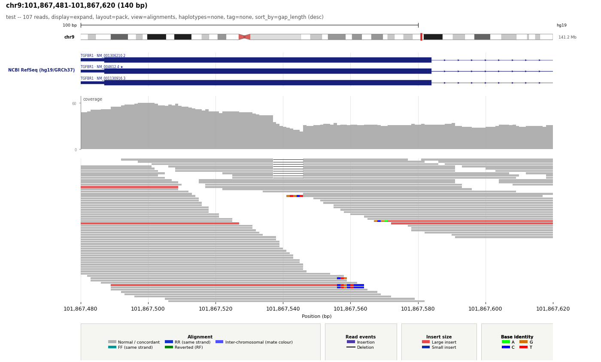

Alignment evidence
See what the reads are saying
Inspect concordant and discordant pairs, long reads, split reads, soft clips, gaps, insertions, base mismatches, and MM/ML modifications with familiar evidence colours.
Version 0.3.0 · Open source
Create clear, IGV-like snapshots from indexed BAM files—complete with alignments, coverage, variants, genes, companion tracks, and publication-ready styling.
pip install locus-snap

Designed for genomic review
Bring the evidence that matters into a consistent figure—without manually arranging screenshots or leaving your analysis workflow.
Alignment evidence
Inspect concordant and discordant pairs, long reads, split reads, soft clips, gaps, insertions, base mismatches, and MM/ML modifications with familiar evidence colours.
Quantitative context
Combine read evidence with coverage allele fractions, copy-number states, and variant companions.
Companion tracks
Add RefSeq isoforms, GTF/GFF, BED, VCF, peak, and signal tracks with configurable labels and heights.
Extension API v1
Install a Python entry-point plugin and draw arbitrary data through a stable canvas while LocusSnap owns coordinates, grids, layout, and export.
Review at scale
Render BED or VCF candidates across a cohort, compare sample metrics and deltas, and share one self-contained HTML report.
Close inspection
At small windows, display reference bases, mismatches, individual soft-clipped nucleotides, and insertion lengths.
Figure control
Use YAML presets or command-line options for track sizes, legends, grids, titles, highlighted spans, colours, resolution, and output format.
Documentation
The guide is separated into short entry points, task-based workflows, copyable recipes, and reference material so you do not have to search one long README.
Selected output
These examples are generated by LocusSnap from its reproducible demonstration data. Select a figure to inspect it at full resolution.
Quick start
Install from PyPI, point LocusSnap at an indexed BAM, choose a 1-based inclusive region, and write the result to your output directory.
samtools index sample.bam if needed# Install from PyPI
pip install locus-snap
# Render an indexed BAM
locus-snap \
--bam sample.bam \
--region chr9:101867481-101867620 \
--output_dir out \
--output_name locusout/locus.pngReady when your BAM is
Install LocusSnap from PyPI or explore the source, examples, and full option reference on GitHub.